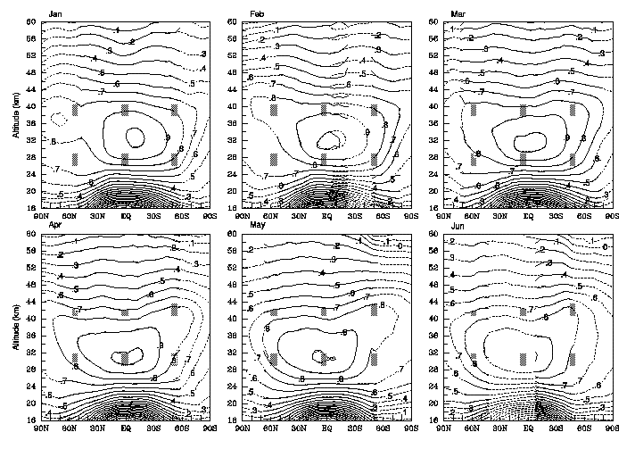
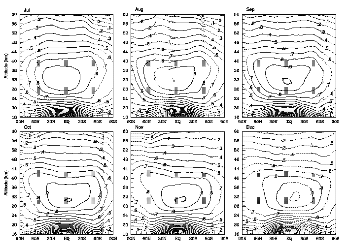

Fig. 1: Monthly mean latitude-altitude distributions of O3 volume mixing ratio (ppmv) logarithm from the SAGE II raw
measurements (solid) and the analyzed data (dashed). The contour
interval is 0.1 units, and mixing ratios greater than 5 ppmv are shaded.

